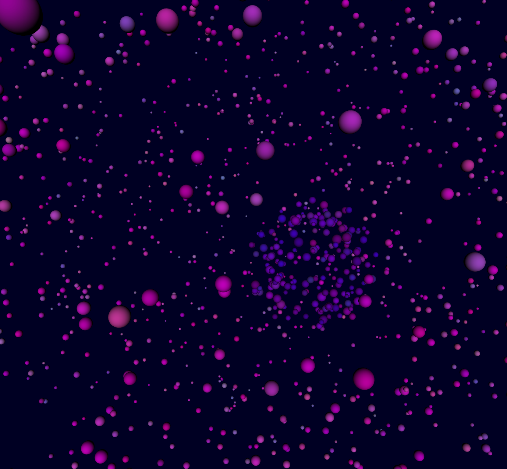
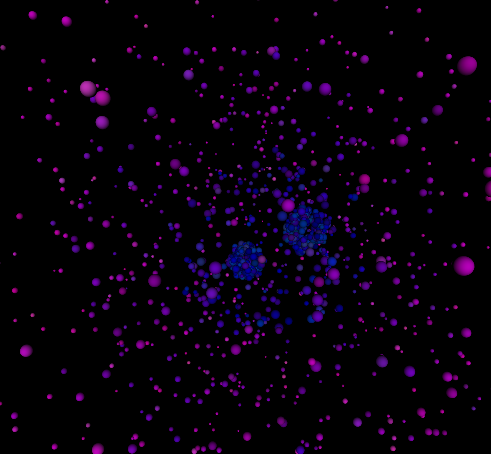
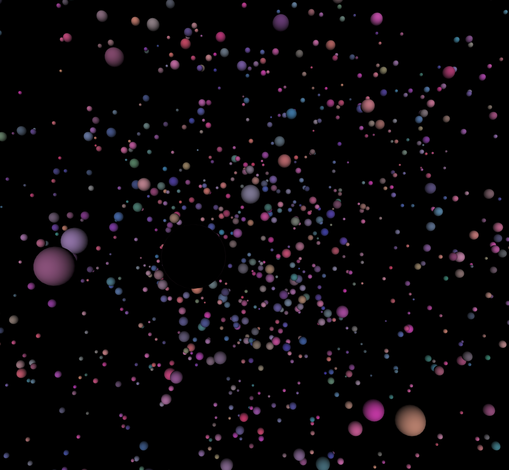
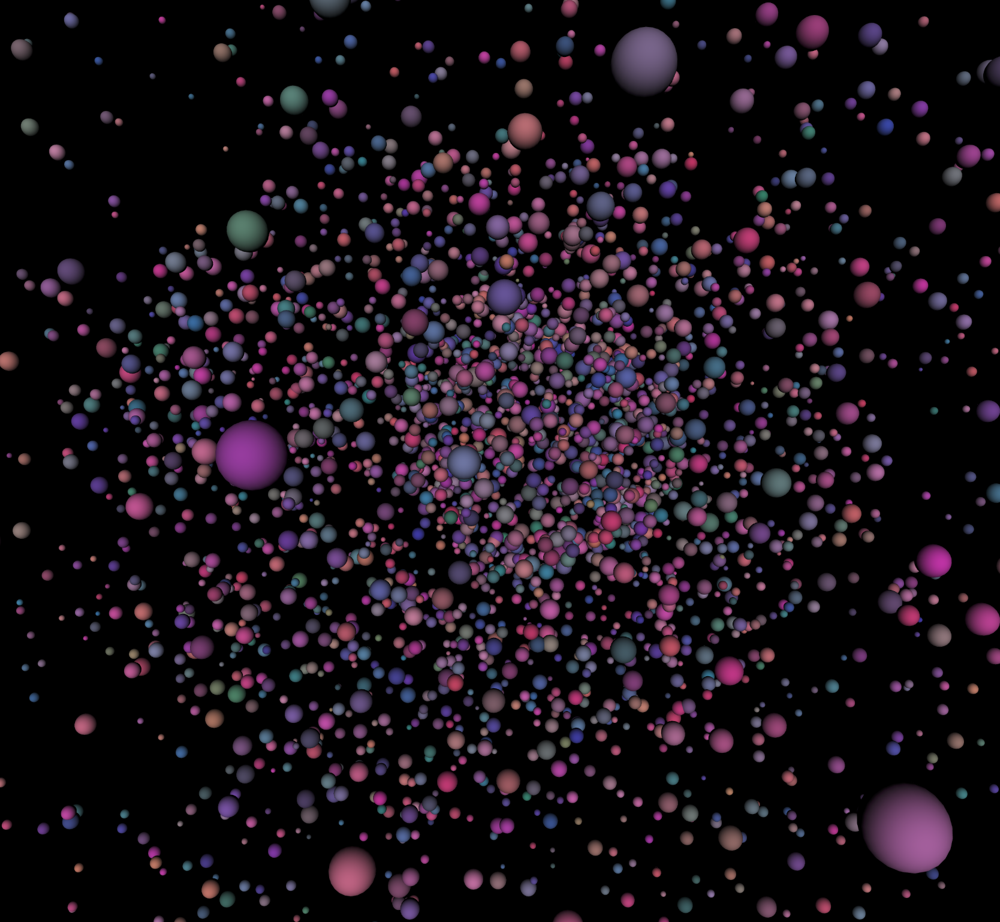
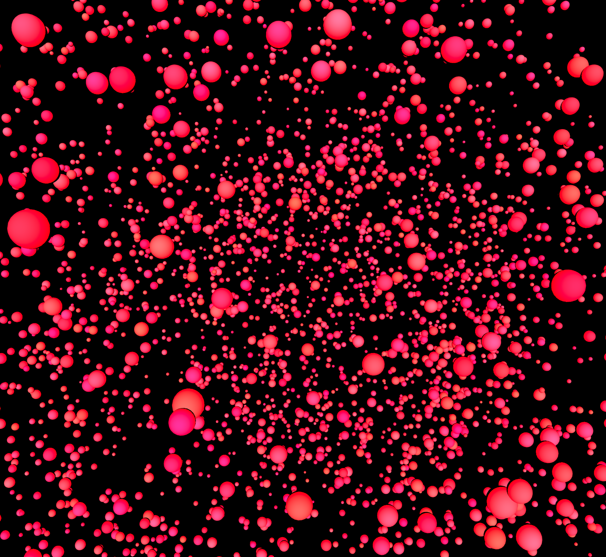
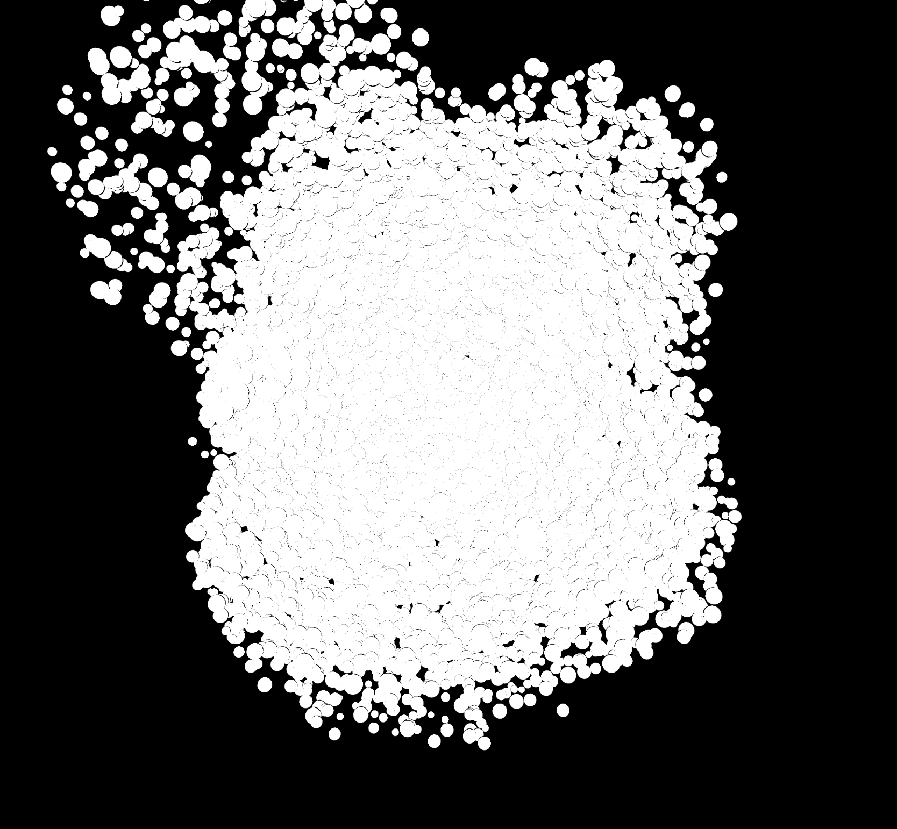
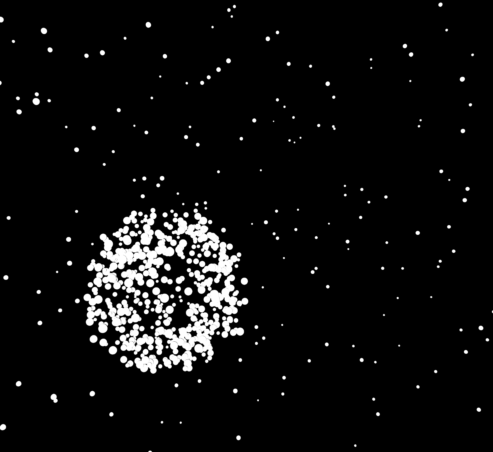

https://editor.p5js.org/wyatt-3/sketches/SgmnxkAWk
I wasn't able to do this one directly in VS code. I tried a few times but couln't get my script.js file to link so I'm posting my "editor.p5js" link above.
Again, I'd like to credit the tutorial video I found on youtube that I based my design off of -----> https://www.youtube.com/watch?v=MceZFeV2jhE
I was able to reverse engineer it and get the aesthetics to my liking.
V1 - Pretty true to the demo. But the aesthetics and colors weren't to my liking.

V2 - Changed the backgound to black.

V3 - Playing around with the colors of the balls.

V4 - Changed the frequency at which the balls appear.

V5 - Played with the colors again to be more single colored, but pop more.

V6 - Adjusted the colors to be monochromatic. But made the spawn rate too fast.

V7 - Final adjsutment. I like the monochromatic feel and rate. Reminded me of Paks "Merge".
